Ori de câte ori învățați un program nou, este important să vă familiarizați cu fereastra programului și instrumentele din cadrul acestuia. Lucrul cu Access nu este diferit. Cunoașterea drumului în mediul Access va face învățarea și utilizarea Access mult mai ușoară.
În această lecție, vă veți familiariza cu mediul Access, inclusiv cu Panglică, vizualizarea în culise, panoul de navigare și bara File Document. De asemenea, veți învăța cum să navigați cu un formular de navigare dacă baza de date include unul.
Cunoașterea AccessAccess folosește Panglică pentru a organiza comenzile. Dacă sunteți nou la Access sau aveți mai multă experiență cu versiuni mai vechi, ar trebui să vă faceți mai întâi ceva timp pentru a vă familiariza cu interfața Access.
PanglicaAccesul folosește un sistem Ribbon cu file în locul meniurilor tradiționale. Panglica conține mai multe file, fiecare cu mai multe grupuri de comenzi. De exemplu, grupul Clipboard din fila Acasă conține comenzile Cut, Copy și Paste.
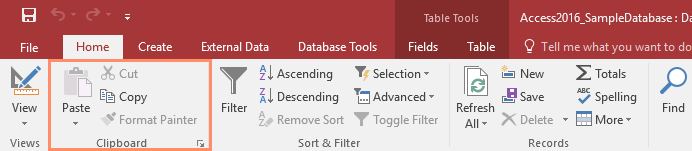
Unele grupuri au, de asemenea, o mică săgeată în colțul din dreapta jos pe care puteți da clic pentru și mai multe opțiuni.
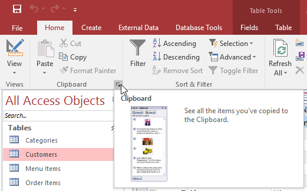
Pentru a minimiza și maximiza Panglica:Panglica este concepută pentru a răspunde sarcinii dvs. curente; cu toate acestea, puteți alege să minimizați Panglica dacă descoperiți că ocupă prea mult spațiu pe ecran.
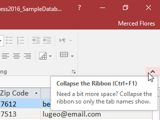
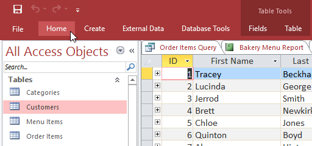
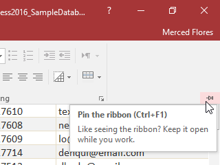
Bara de instrumente Acces rapid, situată deasupra Panglicii, vă permite să accesați comenzi comune indiferent de fila în care vă aflați. În mod implicit, afișează comenzile Salvare , Anulare și Reluare. Dacă doriți, îl puteți personaliza adăugând comenzi suplimentare.
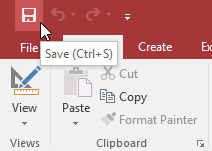
Vedere în culiseVizualizarea în culise vă oferă diverse opțiuni pentru salvarea, deschiderea și imprimarea bazei de date.
Pentru a accesa vizualizarea Culise: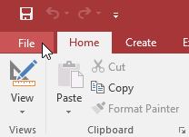
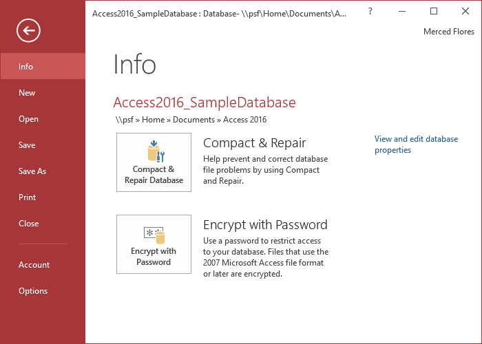
Panoul de navigare este o listă care conține fiecare obiect din baza de date. Pentru o vizualizare mai ușoară, obiectele sunt organizate în grupuri după tip. Puteți deschide, redenumi și șterge obiecte folosind panoul de navigare.
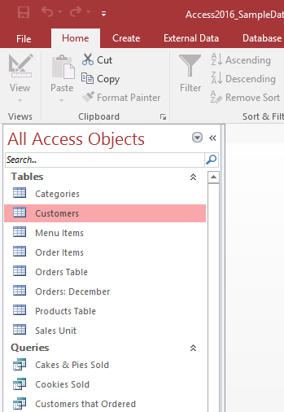
Pentru a minimiza și maximiza panoul de navigare:Panoul de navigare este conceput pentru a vă ajuta să vă gestionați toate obiectele; totuși, dacă simțiți că ocupă prea mult spațiu pe ecran, îl puteți minimiza.
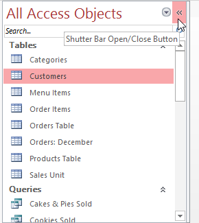
În mod implicit, obiectele sunt sortate după tip , cu tabele într-un grup, formulare în altul și așa mai departe. Cu toate acestea, dacă doriți, puteți sorta obiectele din panoul de navigare în grupuri la alegere. Există patru opțiuni de sortare:
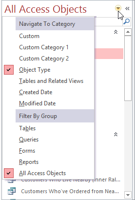
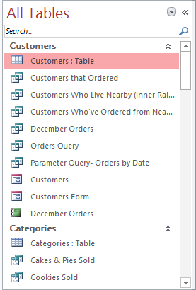
Unele baze de date includ un formular de navigare care se deschide automat atunci când baza de date este deschisă. Formularele de navigare sunt concepute pentru a fi un înlocuitor ușor de utilizat al panoului de navigare. Acestea conțin file care vă permit să vizualizați și să lucrați cu formulare, interogări și rapoarte obișnuite. Dacă aveți la dispoziție obiectele utilizate frecvent într-un singur loc, vă permite să le accesați rapid și ușor.
Pentru a deschide un obiect dintr-un formular de navigare, faceți clic pe fila acestuia. Obiectul va fi afișat în formularul de navigare. Odată ce un obiect este deschis, puteți lucra cu el așa cum ați proceda în mod normal. În exemplul de mai jos, formularul de navigare are file în partea din stânga sus pentru comenzi, clienți și articole de meniu și fiecare va deschide un obiect corespunzător.
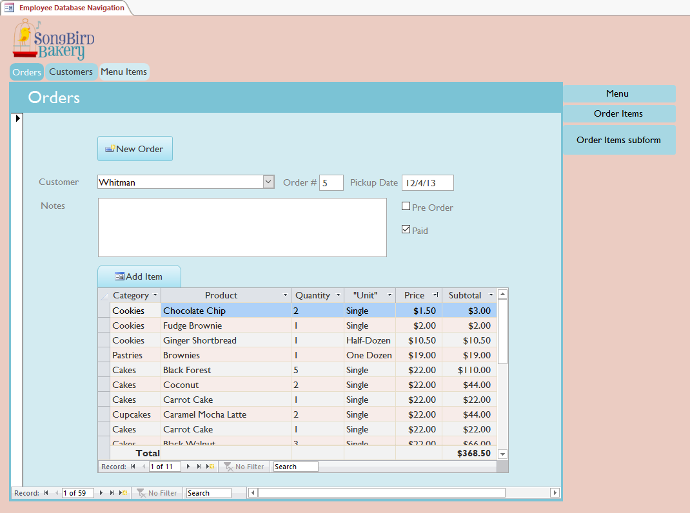
În general, formularele de navigare includ doar obiectele cu care un utilizator obișnuit va trebui să lucreze destul de regulat, motiv pentru care formularul de navigare poate să nu includă fiecare formular, interogare sau raport. Acest lucru facilitează navigarea în baza de date. Prin ascunderea tabelelor și a formularelor, interogărilor și rapoartelor utilizate rar, se reduce, de asemenea, șansa ca baza de date să fie deteriorată de utilizatorii care editează sau șterg accidental datele necesare.
Din acest motiv, este important să întrebați designerul sau administratorul bazei de date înainte de a lucra cu obiecte scare nu sunt disponibile în formularul de navigare. Odată ce obțineți aprobarea, puteți pur și simplu să maximizați panoul de navigare și să deschideți obiectele de acolo.